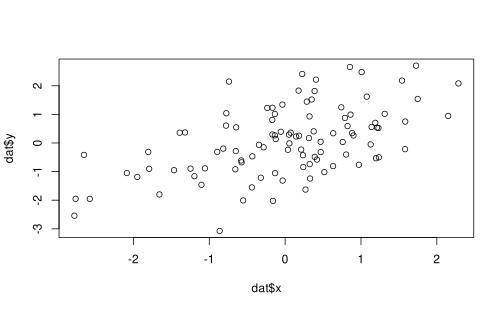
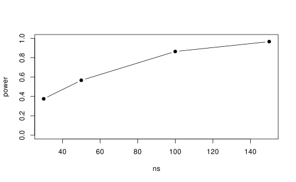

?familySimulating a GLM
Psychological Sciences
Filippo Gambarota
University of Padova
Last modified: 24-01-2025
Monte Carlo Simulations
Monte Carlo methods, or Monte Carlo experiments, are a broad class of computational algorithms that rely on repeated random sampling to obtain numerical results. The underlying concept is to use randomness to solve problems that might be deterministic in principle
General Workflow
Despite the specific applications, Monte Carlo simulations follows a similar pattern:
- Define the data generation process (DGP)
- Use random numbers sampling to generate data according to assumptions
- Calculate a statistics, fit a model or do some computations on the generated data
- Repeat 2-3 several times (e.g., 10000)
- Get a summary of the results
Random numbers in R
In R there are several functions to generate random numbers and they are linked to specific probability distributions. You can type ?family() to see available distributions for glm.
Random numbers in R
In fact, there are other useful distributions not listed in ?family(), because they are not part of glm. For example the beta or the unif (uniform) distributions. Use ?Distributions for a complete list:
?DistributionsRandom numbers in R
However, it is always possible to include other distributions with packages. For example the MASS::mvrnorm() implement the multivariate normal distribution or the extraDistr::rhcauchy() for a series of truncated distributions.
Random numbers in R
The general pattern is always the same. There are 4 functions called r, p, q and d combined with a distribution e.g. norm creating several utilities. For example, rnorm() generate number from a normal distribution.
Why Monte Carlo Simulations?
Why Monte Carlo Simulations?
Monte Carlo simulations are used for several purposes:
- Solve computations impossible or hard to do analytically
- Estimate the statistical power, type-1 error, type-M error etc.
Example: standard error
A classical example is estimating the standard error (SE) of a statistics. For example, we know that the SE of a sample mean is:
\[ \sigma_\overline x = \frac{s_x}{\sqrt{n_x}} \]
Where \(s_x\) is the standard deviation of \(x\) and \(n_x\) is the sample size.
Example: standard error
However we are not good in deriving the SE analytically. We know that the SE is the standard deviation of the sampling distribution of a statistics.
The sampling distribution is the distribution obtained by calculating the statistics (in this case the mean) on all possible (or a very big number) samples of size \(n\).
We can solve the problems creating a very simple Monte Carlo Simulation
Example: standard error
We simulate 10000 samples of size \(n\) by a normal distribution with \(\mu = 10\) and \(\sigma = 5\). We calculate the mean \(\overline x\) for each iteration and then we calculate the standard deviation of the vectors of means.
Example: standard error
Simulating GLM
Workflow
The general workflow is the following:
- Define the experimental design:
- how many variables?
- how many participants/trials?
- which type of variables (categorical, numerical)?
- Define the probability distribution of the response variable:
- Gaussian
- Poisson
- Binomial
- …
- Create the model matrix and define all parameters of the simulation: \(\beta_0\), \(\beta_1\), \(\beta_2\), etc.
- Compute the linear predictors \(\eta\) on the link function scale
- Apply the inverse of the link function \(g^{-1}(\eta)\) obtaining values on the original scale
- Simulate the response variable by sampling from the appropriate distribution
- Fit the appropriate model and check the result
- In case of estimating statistical properties (e.g., power) repeat the simulation (1-7) several times (e.g., 10000) and summarize the results
Example with a linear model
Let’s simulate a simple linear model (i.e., GLM with a Gaussian random component and identity link function).
\[ \hat y_i = \beta_0 + \beta_1x_i + \epsilon_i \]
In this example we have:
- 1 predictor \(x\) that is numeric
- 1 response variable \(y\) that is numeric
- 3 parameters: \(\beta_0\), \(\beta_1\) and \(\sigma_{\epsilon}\)
- Gaussian random component and identity link function
Example with a linear model
n <- 100
x <- rnorm(n)
dat <- data.frame(x)
X <- model.matrix(~x, data = dat)
head(X)#> (Intercept) x
#> 1 1 0.5168257
#> 2 1 0.2858246
#> 3 1 0.2353997
#> 4 1 1.1279019
#> 5 1 0.4687833
#> 6 1 0.1450792Example with a linear model
Then let’s define the model parameters and compute the predicted values.
b0 <- 0
b1 <- 0.6
sigma2 <- 1
dat$lp <- b0 + b1*x
plot(dat$x, dat$lp)Example with a linear model
Now, we are fitting a model with a Gaussian random component and an identity link function. Thus using the \(g\) function has no effect.
Example with a linear model
Now we can fit the appropriate model using the glm function:
#>
#> Call:
#> glm(formula = y ~ x, family = gaussian(link = "identity"), data = dat)
#>
#> Coefficients:
#> Estimate Std. Error t value Pr(>|t|)
#> (Intercept) 0.05930 0.10083 0.588 0.558
#> x 0.61041 0.09522 6.411 5.1e-09 ***
#> ---
#> Signif. codes: 0 '***' 0.001 '**' 0.01 '*' 0.05 '.' 0.1 ' ' 1
#>
#> (Dispersion parameter for gaussian family taken to be 1.016665)
#>
#> Null deviance: 141.416 on 99 degrees of freedom
#> Residual deviance: 99.633 on 98 degrees of freedom
#> AIC: 289.42
#>
#> Number of Fisher Scoring iterations: 2Example with a linear model
A faster way, especially with many parameters is using matrix multiplication between the \(X\) matrix and the vector of coefficients:
\[\begin{equation} \boldsymbol{y} = \begin{bmatrix} 1 & x_{1} \\ 1 & x_{2} \\ 1 & x_{3} \\ 1 & x_{4} \\ \vdots & x_n \end{bmatrix} \begin{bmatrix} \beta_0 \\ \beta_1 \end{bmatrix} + \begin{bmatrix} \epsilon_1 \\ \epsilon_2 \\ \epsilon_3 \\ \vdots \\ \epsilon_n \end{bmatrix} \end{equation}\]
Example with a linear model
Example with a linear model
Now let’s add another effect, for example a binary variable group:
group <- c("a", "b")
x <- rnorm(n*2)
dat <- data.frame(
x = x,
group = rep(group, each = n)
)
X <- model.matrix(~ group + x, data = dat)
head(X)#> (Intercept) groupb x
#> 1 1 0 -2.2095019
#> 2 1 0 -0.9045332
#> 3 1 0 2.1900507
#> 4 1 0 -2.0726084
#> 5 1 0 1.1819484
#> 6 1 0 0.6877488Example with a linear model
Now the model matrix has another column groupb that is the dummy-coded version of the group variable. Now let’s set the parameters:
b0 <- 0 # y value when group = "a" and x = 0
b1 <- 1 # difference between groups
b2 <- 0.6 # slope of the group
sigma2 <- 1 # residual varianceThen we can compute the formula adding the new parameters:
Example with a linear model
dat |>
ggplot(aes(x = x, y = y, color = group)) +
geom_point() +
geom_smooth(method = "lm",
formula = y ~ x,
se = FALSE)Example with a linear model
The same using matrix formulation:
Then we can fit the model:
#>
#> Call:
#> lm(formula = y ~ group + x, data = dat)
#>
#> Residuals:
#> Min 1Q Median 3Q Max
#> -4.3797 -0.5961 -0.0285 0.6634 2.3573
#>
#> Coefficients:
#> Estimate Std. Error t value Pr(>|t|)
#> (Intercept) 0.01904 0.09916 0.192 0.848
#> groupb 1.09152 0.14065 7.760 4.49e-13 ***
#> x 0.68818 0.07012 9.815 < 2e-16 ***
#> ---
#> Signif. codes: 0 '***' 0.001 '**' 0.01 '*' 0.05 '.' 0.1 ' ' 1
#>
#> Residual standard error: 0.9913 on 197 degrees of freedom
#> Multiple R-squared: 0.4243, Adjusted R-squared: 0.4185
#> F-statistic: 72.6 on 2 and 197 DF, p-value: < 2.2e-16Generalized Linear Models
Generalized Linear Models
The workflow presented before can be applied to GLMs. The only extra steps is performing the link-function transformation.
We simulate data fixing coefficients and computing \(\eta\), then we apply the inverse of the link function (4 and 5 from the workflow slide).
GLM example
Let’s simulate the effect of a continuous predictor on the probability of success, thus using a Binomial model.
ns <- 100 # sample size
x <- runif(ns) # x predictor
b0 <- qlogis(0.001) # probability of correct response when x is 0
b1 <- 10 # increase in the logit of a correct response by unit increase in x
dat <- data.frame(id = 1:ns, x = x)
head(dat)#> # A tibble: 6 × 2
#> id x
#> <int> <dbl>
#> 1 1 0.686
#> 2 2 0.999
#> 3 3 0.284
#> 4 4 0.128
#> 5 5 0.600
#> 6 6 0.531GLM example
Let’s compute the \(\eta\) by doing the linear combination of predictors and coefficients:
dat$lp <- b0 + b1 * dat$x
ggplot(dat, aes(x = x, y = lp)) +
geom_line() +
ylab(latex("\\eta")) +
xlab("x")GLM example
Then we can compute \(g^{-1}(\eta)\) applying the inverse of the link function. Let’s use the logit:
GLM example
So far we have the expected probability of success for each participant and \(x\), but we need to include the random component. We can use \(p\) or \(g^{-1}(\eta)\) more generally to sample from the \(\mu\) parameter of the probability distribution.
#> # A tibble: 6 × 5
#> id x lp p y
#> <int> <dbl> <dbl> <dbl> <int>
#> 1 1 0.686 -0.0508 0.487 0
#> 2 2 0.999 3.09 0.956 1
#> 3 3 0.284 -4.07 0.0168 0
#> 4 4 0.128 -5.62 0.00360 0
#> 5 5 0.600 -0.903 0.288 0
#> 6 6 0.531 -1.60 0.168 0GLM example
Now we have simulated a vector of responses with the appropriate random component. We can plot the results.
dat |>
ggplot(aes(x = x, y = y)) +
geom_point(position = position_jitter(height = 0.05)) +
stat_smooth(method = "glm",
method.args = list(family = fam),
se = FALSE)GLM example
Finally we can fit the model and see if the parameters are estimated correctly. Of course, we know the true data generation process thus we are fitting the best model.
#>
#> Call:
#> glm(formula = y ~ x, family = fam, data = dat)
#>
#> Coefficients:
#> Estimate Std. Error z value Pr(>|z|)
#> (Intercept) -8.132 1.791 -4.541 5.61e-06 ***
#> x 11.896 2.514 4.731 2.23e-06 ***
#> ---
#> Signif. codes: 0 '***' 0.001 '**' 0.01 '*' 0.05 '.' 0.1 ' ' 1
#>
#> (Dispersion parameter for binomial family taken to be 1)
#>
#> Null deviance: 129.489 on 99 degrees of freedom
#> Residual deviance: 49.526 on 98 degrees of freedom
#> AIC: 53.526
#>
#> Number of Fisher Scoring iterations: 7Power analysis
Power analysis
Once the data generation process and the model has been defined, the power analysis is straightforward.
The hardest part is fixing plausible values according to your knowledge and/or previous literature.
For example, there are methods to convert from odds ratio to Cohen’s \(d\) or other metrics.
The effectsize package is a great resource to understand and compute effect sizes.
or <- 1.5 # odds ratio
effectsize::oddsratio_to_d(or)#> [1] 0.2235446Power analysis
We can see the relationship between \(d\) and (log) Odds Ratio:

Power analysis
For example we can a logistic regression with a binary predictor, fixing the effect size:
n <- 30 # number of subjects
d <- 0.5 # effect size in cohen's d
or <- effectsize::d_to_oddsratio(d) # this is beta1
x <- rep(c("a", "b"), each = n)
xc <- ifelse(x == "a", 0, 1)
dat <- data.frame(x = x, xc = xc)
b0 <- qlogis(0.3) # probability of a
b1 <- log(or)
dat$lp <- b0 + b1 * dat$xc
dat$y <- rbinom(nrow(dat), 1, plogis(dat$lp))
head(dat)#> # A tibble: 6 × 4
#> x xc lp y
#> <chr> <dbl> <dbl> <int>
#> 1 a 0 -0.847 1
#> 2 a 0 -0.847 1
#> 3 a 0 -0.847 1
#> 4 a 0 -0.847 0
#> 5 a 0 -0.847 0
#> 6 a 0 -0.847 0Power analysis
Clearly, we need to repeat the sampling process several times, store the results (e.g., the p-value of \(\beta_1\)) and then compute the power.
Power analysis
With just one condition the power analysis is not really meaningful. We can compute the same for different sample sizes. Here my code is using a series of for loops but there could be a nicer implementation.
ns <- c(30, 50, 100, 150)
power <- rep(0, length(ns))
for(i in 1:length(ns)){
p <- rep(0, nsim)
for(j in 1:nsim){
dat <- data.frame(id = 1:ns[i], x = rep(c("a", "b"), each = ns[i]))
dat$xc <- ifelse(dat$x == "a", 0, 1)
dat$lp <- b0 + b1 * dat$xc
dat$y <- rbinom(nrow(dat), 1, plogis(dat$lp))
fit <- glm(y ~ x, data = dat, family = fam)
p[j] <- summary(fit)$coefficients["xb", "Pr(>|z|)"]
}
power[[i]] <- mean(p <= 0.05)
}Power analysis
Then we can compute the results:
